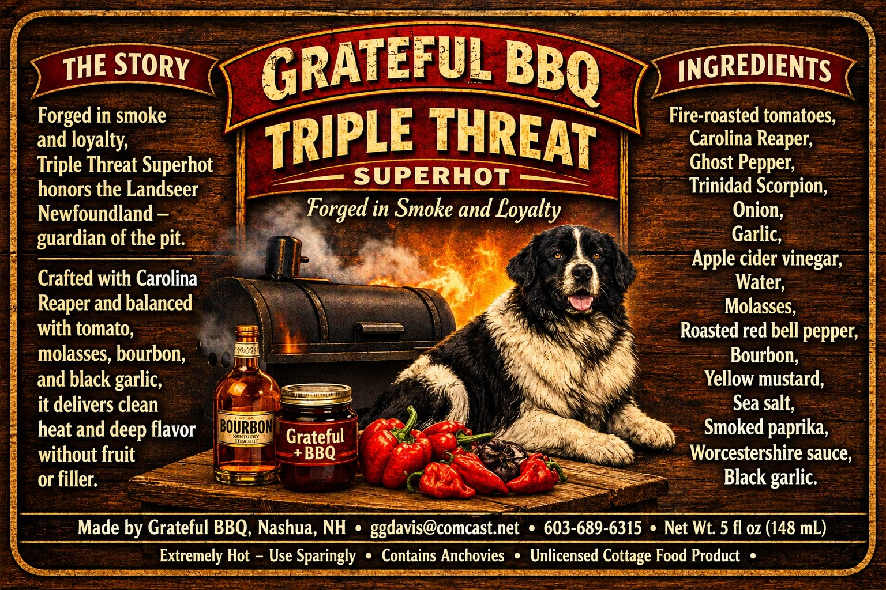
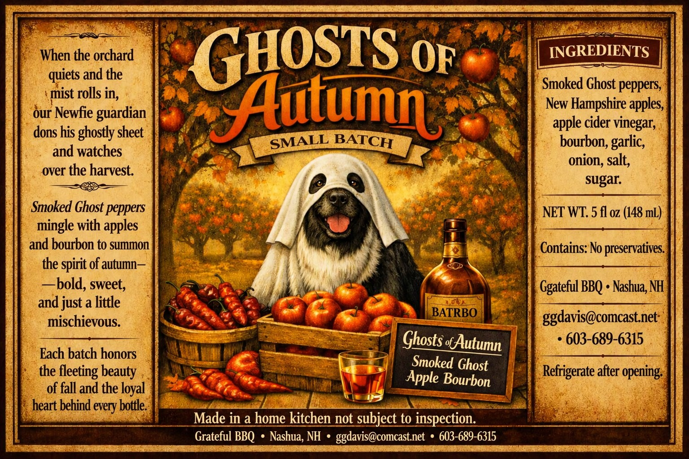
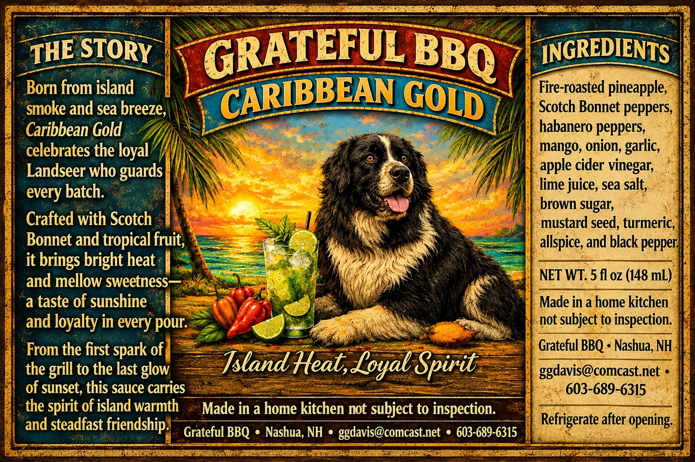
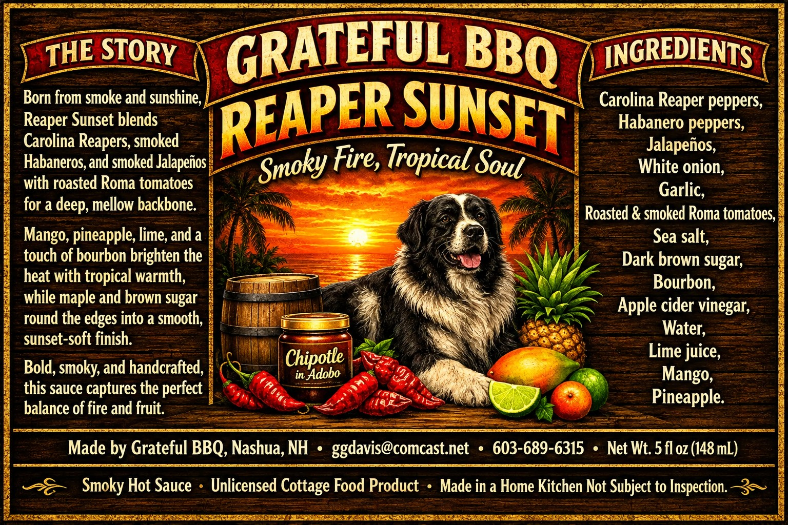
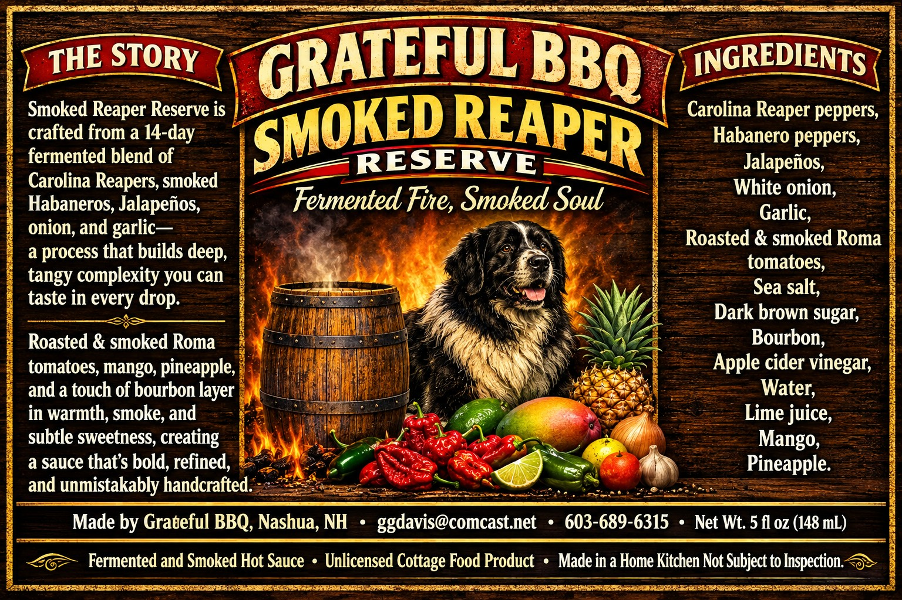
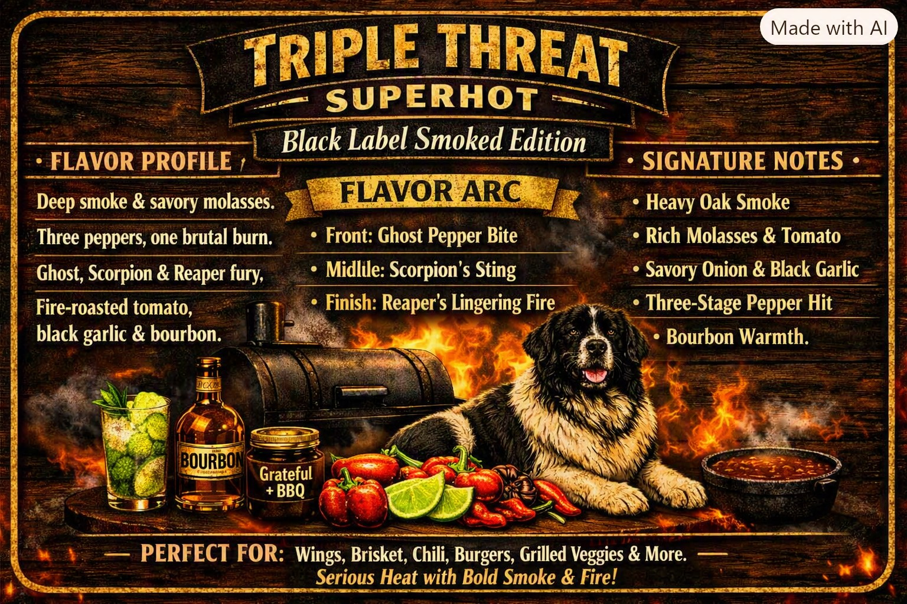
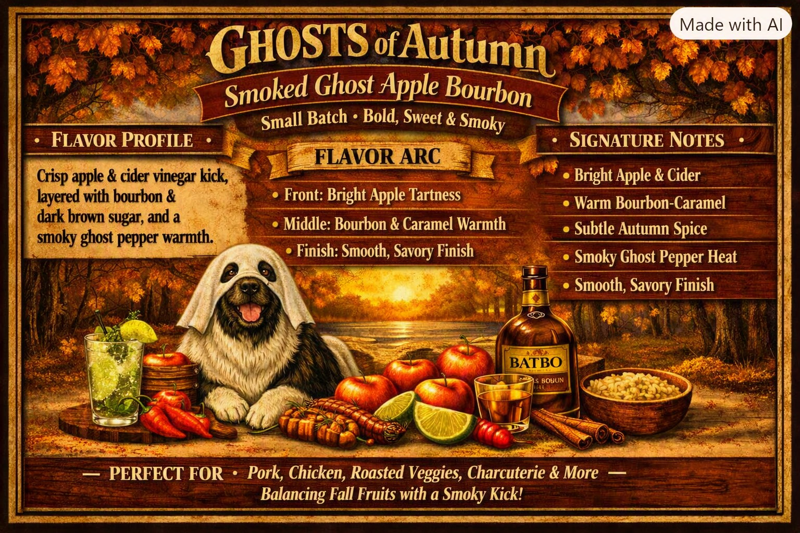
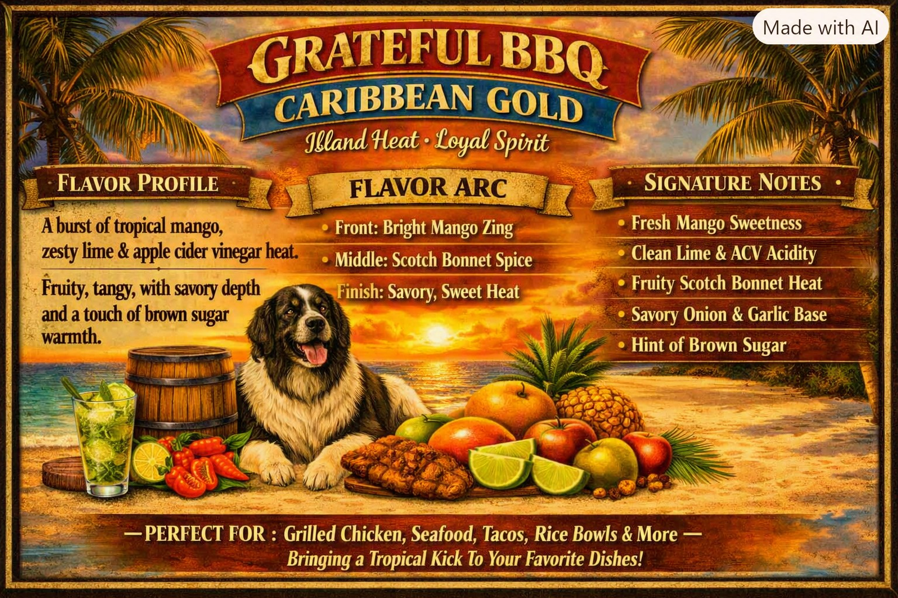
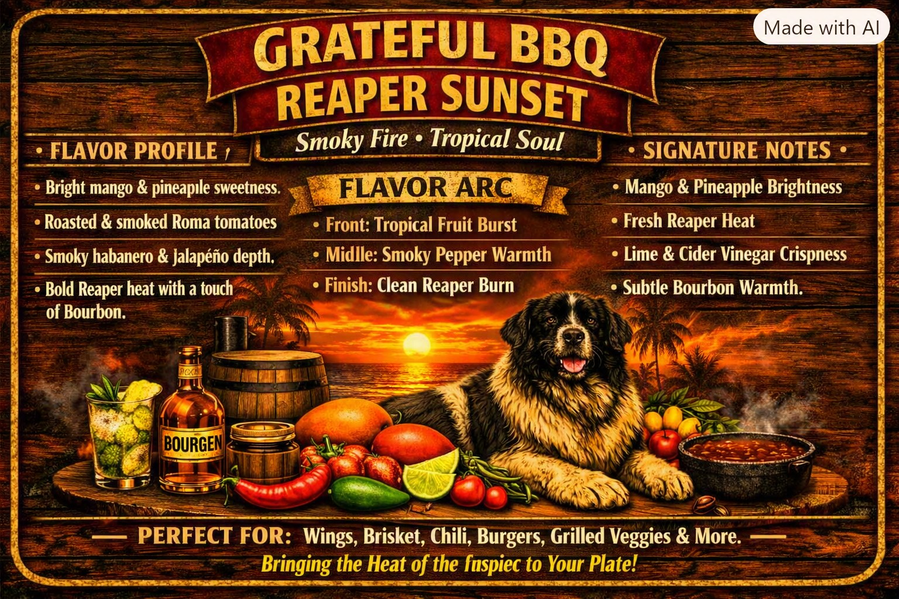
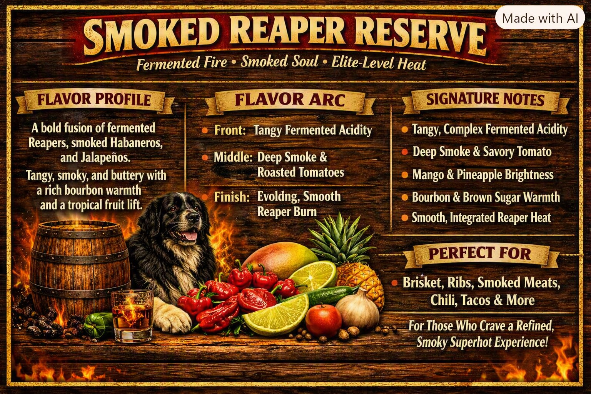

Triple Threat Superhot
A fusion of smoked peppers, roasted tomatoes, and deep savory richness.
View flavor cardWelcome to Grateful BBQ, where fire, family, and flavor come together in every bottle. What started as backyard cooks and late-night experiments has grown into a cottage-law craft sauce brand built on gratitude, bold ingredients, and the loyal spirit of our Landseer companion.

A fusion of smoked peppers, roasted tomatoes, and deep savory richness.
View flavor card
Apples, bourbon, smoked ghost peppers, cinnamon, and warm fall spice.
View flavor card


Deep smoke, roasted peppers, rich tomato body, slow Reaper rise.
View flavor card




Grateful BBQ was born from smoke, fire, and family. What started as backyard cooks and late-night experiments turned into a passion for crafting bold, honest sauces with real ingredients and real heat.
The name Grateful BBQ is a nod to my wife — the heart of our family and the steady force behind everything we do. It’s her license plate, her spirit, her way of moving through the world with gratitude and strength. This brand carries her energy, her warmth, and her belief that good food brings people together.
And at the center of every cook is Mabel — our Landseer, our gentle giant, our loyal girl who never leaves the side of the smoker. She isn’t just a mascot; she’s family. Her calm presence, her patience, and her way of watching over every batch became the soul of Grateful BBQ.
Every bottle carries her spirit: steady, loyal, warm, and full of heart. The Landseer badge isn’t a symbol — it’s Mabel, forever part of the fire and flavor she inspires.
Every sauce is handcrafted in small batches using real ingredients, real smoke, and real time. No shortcuts. No mass production. Just honest flavor built from fire, patience, and the belief that food should mean something.
We operate under New Hampshire Cottage Food Law, producing sauces in a home kitchen not subject to inspection. That means no shipping, no online sales, and no interstate commerce — just local pickup and delivery, person-to-person, the way craft food is meant to be shared.
Grateful BBQ is more than a brand. It’s a family project, a tribute to Mabel, a nod to my wife, a tradition, and a reminder to slow down, cook with intention, and be grateful for the people — and the dogs — who gather around the table.


Grateful BBQ sauces are produced under New Hampshire Cottage Food Law. Products are available only by local pickup or delivery — no online sales or shipping.